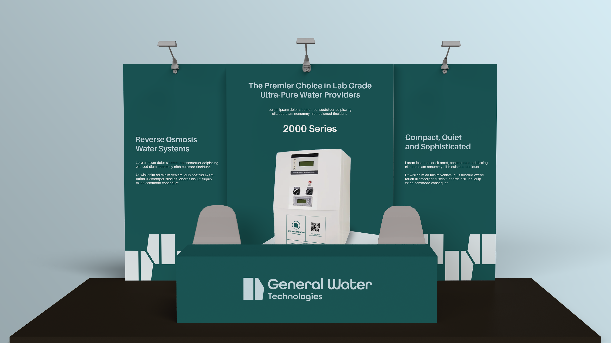
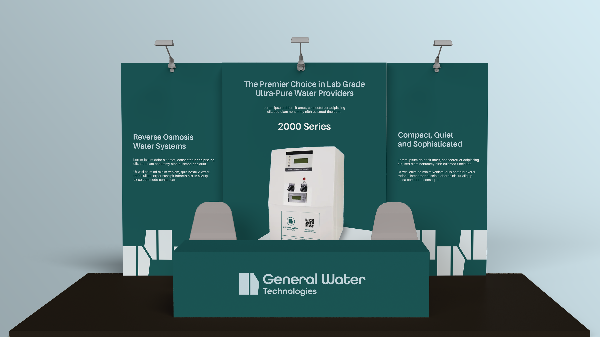
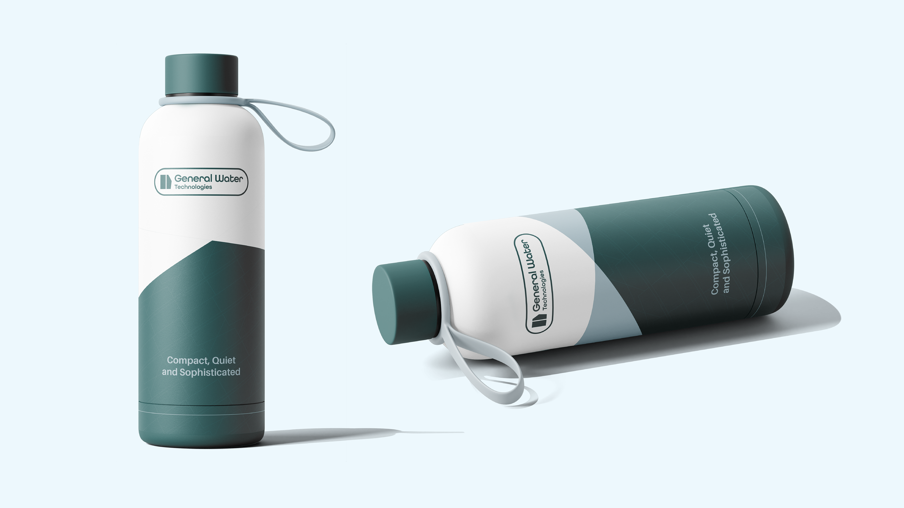
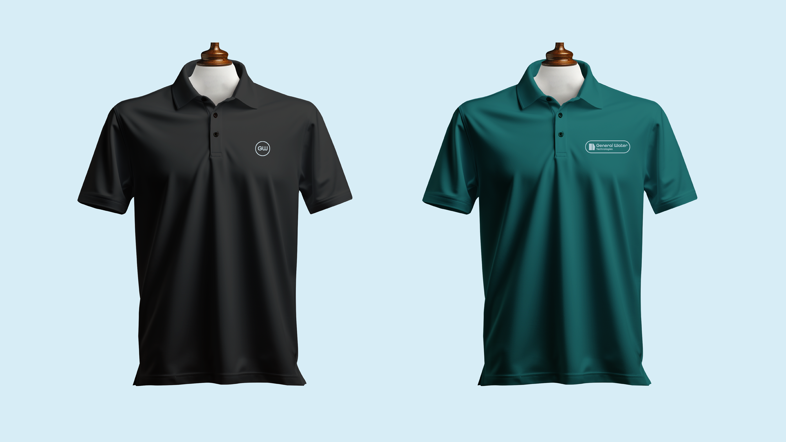
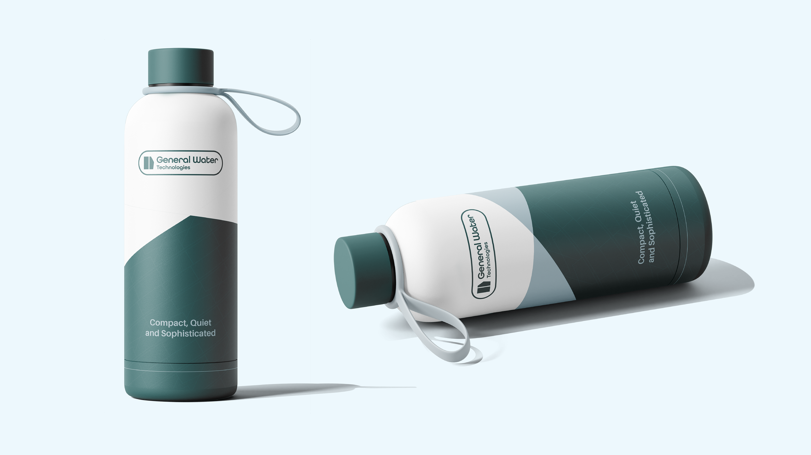
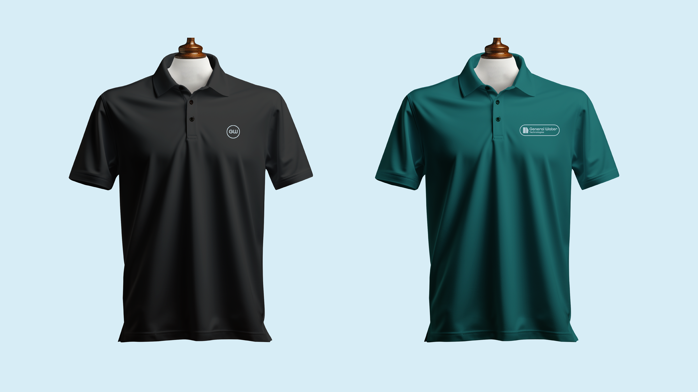
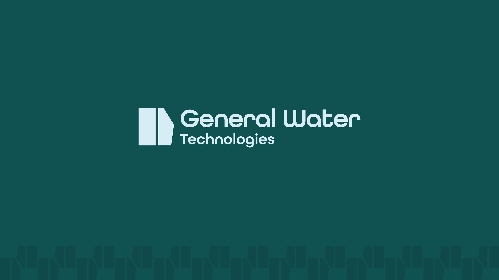
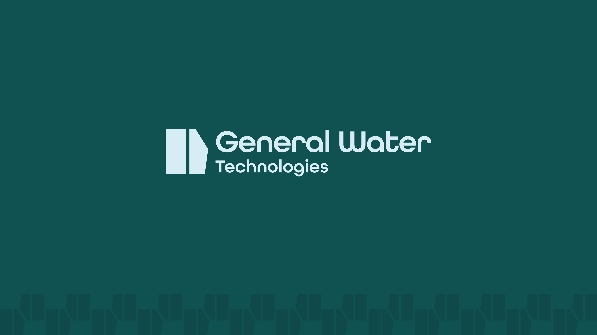

General Water Technologies' brand refresh focused on simplifying their identity while staying true to their roots in reliability and precision. As a long-standing partner to hospitals and labs, the goal was to create a visual system that felt clean, modern, and approachable—without losing the technical credibility the brand is known for. Inspired by their commitment to dependable service and pure water solutions, the updated identity brings together a streamlined logo system, clear typography, and a palette centered around Osmosis Green and Polish Blue. Patterns and photography highlight the equipment and environments where the brand shows up every day. The result is a cohesive look and feel that reflects who they are: a responsive, transparent, and consistent partner in water purification.


 


 





 
